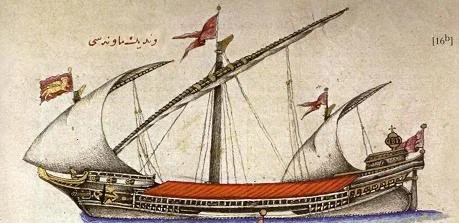

Капудан не был опытным адмиралом, он даже и с морем-то был не очень знаком. Ga'fer Aga был белым евнухом, уроженцем греческой Мальвазии. Венецианские источники характеризуют его как человека надменного и крутого нравом. Именно за эти качества его из главы белых евнухов Сераля сделали капуданом, которому поручили руководить ответственным делом – срочной постройкой кораблей для эскадры снабжения войск султана. Как показывает его донесение (оригинал его и перевод на французский язык можно найти у Jean-Louis Bacqué-Grammont , см. координаты два поста назад) султану, со своей задачей он справился отлично.
Капудан пишет Великому визирю, что он получил приказ султана снарядить, не упуская никаких мелочей, 80 транспортных судов, а также 20 хороших кадырг, т.е. всего 100 кораблей, которые должны быть в готовности «к благословенному наврузу», т.е. к новому году по персидскому календарю, который соответствовал 21 марта 1517 года. Но за этим приказом следом пришел другой: «Поскольку невозможно оснастить 100 кораблей, а ждать уже нельзя, нужно подготовить 20 мавн, 40 кадырг, 10 каик и 2 калита, т.е. всего 77 кораблей, которые немедленно, как только позволит ветер, отправить в порты Газа и Рамла.» (количество «77 кораблей» не соответствует сумме числа приведенных в донесении судов, возможно, здесь арифметическая ошибка автора, а может быть имелись в виду еще какие-то более мелкие суда).
Прервемся, чтобы дать характеристику упоминаемых в донесении капудана судов. Мавна – этот тип судов описан у Кятиба Челеби как галера с одним или двумя латинскими парусами, 26 банками на двух ярусах и семью гребцами на каждое весло, т.е. значительно более высокое и широкое по сравнению с кадыргой. Несет 24 орудия, которые обслуживают тридцать артиллеристов. Мы будем совершенно правы, если обнаружим в этом описании точную копию венецианского галеаса. И если посмотрим верхнюю часть иллюстрации из книги Челеби, которую мы уже приводили, то обнаружим там надпись арабским шрифтом: «венецианская мавна»:

Здесь можно отметить даже попытку изобразить на флаге венецианского крылатого льва св. Марка, и флаги развеваются в нужном направлении – по ветру, только вот одна ошибка. Христианские галеры, и, конечно же, венецианские в их числе, несли флаги не только на мачтах и кормовом флагштоке, как и мусульманские, но и вымпелы на ноке рея. Но художнику-мусульманину такая ошибка простительна.
Colin Imber (" The Navy of Suleyman the Magnificent", Archivum ottomanicum, VI/1980, pp. 248-249) вообще считает мусульманскую мавну аналогом венецианского галеаса с 32 банками для гребцов и с десятью (или даже больше) пушками по каждому борту. Возможно, так оно и было во второй половине XVI века, после того, как впервые появились галеасы в Венеции. Но здесь-то речь идет о документе 1517 года.
Более близким к истине следует считать известного турецкого адмирала и картографа Пири Реиса, который неоднократно в своей «Книге об искусстве навигации» (Kitab-i Bahriye). упоминает такой тип корабля, как мавна. Он не относит мавну к военным галерам, а описывает ее как самый большой тип купеческих галер, известный в итальянских флотах как galera grossa di mercato. Именно на таких галерах доставлялись ценные грузы шелка и специй из Александрии и других портов Восточного Средиземноморья в Венецию. На них же христианские паломники совершали свой путь к святым местам.
Томас Хайд (Thomas Hyde), известный английский востоковед, знаток арабского, персидского, турецкого, древнееврейского и других восточных языков (мы о нем писали раньше, повторим, чтобы не блуждать в прошлых записях), в своих примечаниях к переводу на латинский язык (Оксфорд, 1691) работы Абрахама Перитсола Cosmography (אגרת וארחות עולם ) (1525 г.) , известной также как Itinera mundi, так определяет этот тип судна: Maûn или Maunè – вид большой грузовой галеры, известный с XV века. На каждом весле сидело по 5-6 человек. Эти галеры были аналогичны арабским галерам, которые назывались тариды.. Название мавна имеет тесную связь с арабским существительным маввана (موّنة ) провизия, провиант и соответстующим глаголом мавванун موّن – снабжать провиантом. Версия очень убедительная. С этой версией молчаливо соглашается и Огюстен Жаль в своем «Морском словаре». Примем эту версию и мы, тем более что главной задача кораблей, которые готовил к походу Ga'fer Aga, была как раз доставка подкреплений и провианта для армии султана.
О других упоминаемых в донесении кораблях поговорим в следующий раз.